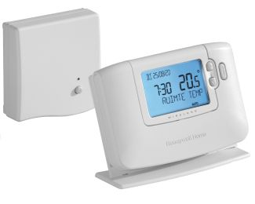 |
View Honeywell CM921 / CM927 / BDR91 user manualHoneywell CM921 / CM927 / BDR91 user manual PDF |
View Honeywell CM921 / CM927 / BDR91 installation manualHoneywell CM921 / CM927 / BDR91 installation manual PDF |
Honeywell CM921 / CM927 / BDR91 |
Wireless room stat & relay |
|
|
|
View Honeywell DT90A user manualHoneywell DT90A user manual PDF |
View Honeywell DT90A installation manualHoneywell DT90A installation manual PDF |
Honeywell DT90A |
Wireless room thermostat |
|
|
|
View Honeywell DT90E user manualHoneywell DT90E user manual PDF |
View Honeywell DT90E installation manualHoneywell DT90E installation manual PDF |
Honeywell DT90E |
View Quick start: Honeywell DT90E quick start guideHoneywell DT90E quick start guide PDF |
|
|
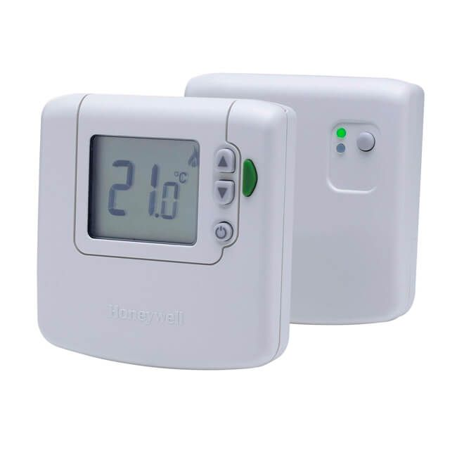 |
View Honeywell DT92E user manualHoneywell DT92E user manual PDF |
View Honeywell DT92E installation manualHoneywell DT92E installation manual PDF |
Honeywell DT92E |
View Quick start: Honeywell DT92E quick start guideHoneywell DT92E quick start guide PDF |
|
|
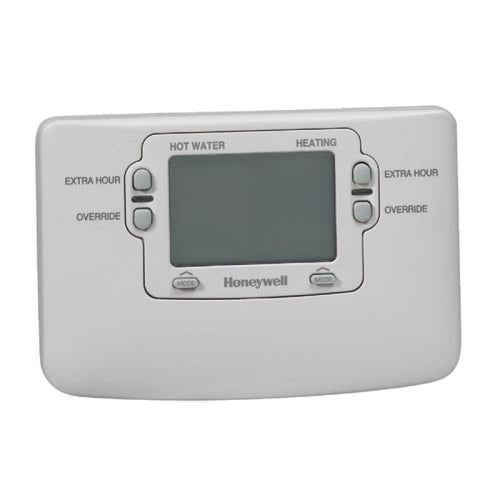 |
View Honeywell Home Wiring Guide user manualHoneywell Home Wiring Guide user manual PDF |
View Honeywell Home Wiring Guide installation manualHoneywell Home Wiring Guide installation manual PDF |
Honeywell Home Wiring Guide |
Sundial system wiring |
|
|
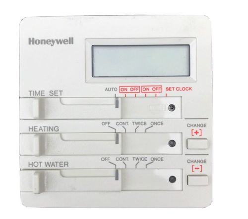 |
View Honeywell ST699 user manualHoneywell ST699 user manual PDF |
View Honeywell ST699 installation manualHoneywell ST699 installation manual PDF |
Honeywell ST699 |
1-day programmer |
|
|
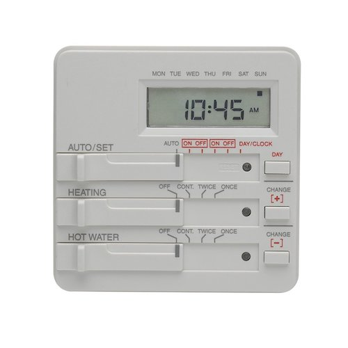 |
View Honeywell ST799 user manualHoneywell ST799 user manual PDF |
View Honeywell ST799 installation manualHoneywell ST799 installation manual PDF |
Honeywell ST799 |
1-day programmer |
|
|
 |
View Honeywell ST9000 user manualHoneywell ST9000 user manual PDF |
View Honeywell ST9000 installation manualHoneywell ST9000 installation manual PDF |
Honeywell ST9000 |
Programmer range |
|
|
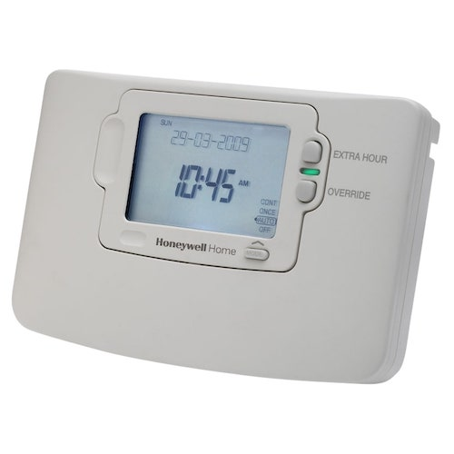 |
View Honeywell ST9100A user manualHoneywell ST9100A user manual PDF |
View Honeywell ST9100A installation manualHoneywell ST9100A installation manual PDF |
Honeywell ST9100A |
1-day programmer |
|
|
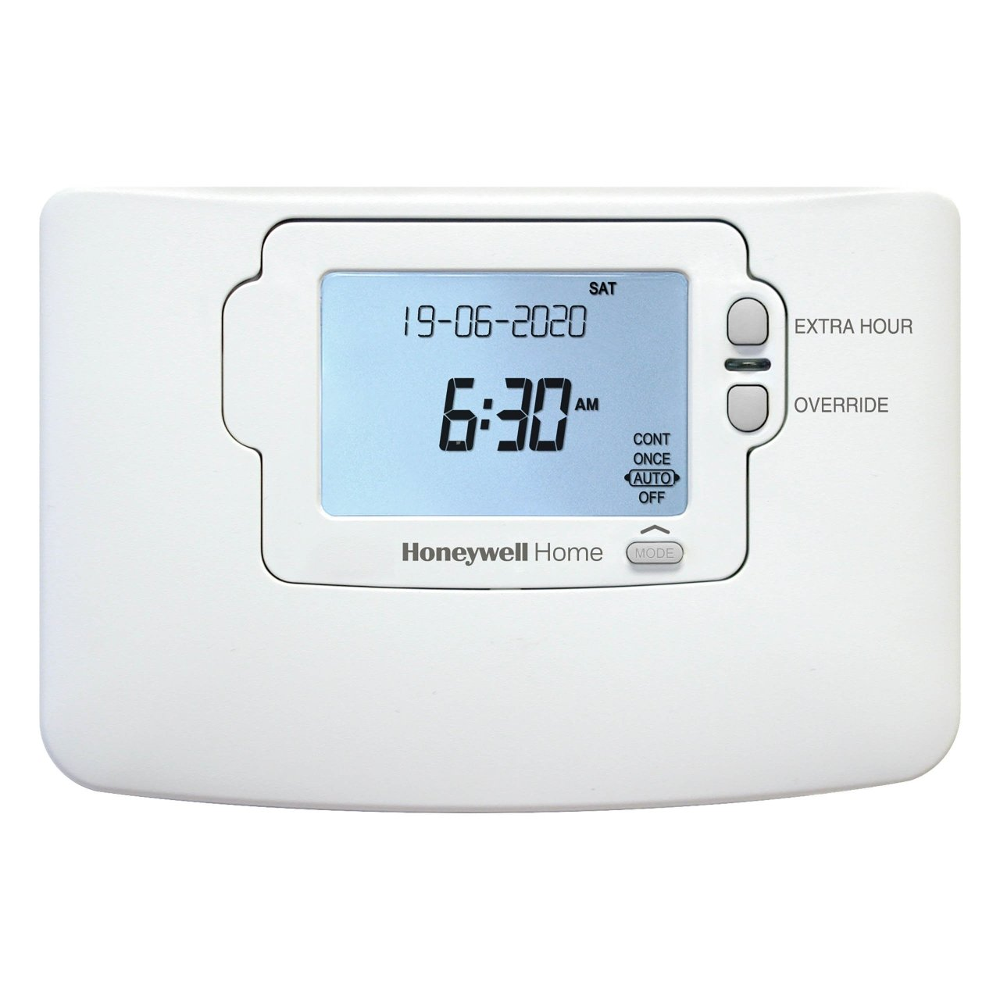 |
View Honeywell ST9100C user manualHoneywell ST9100C user manual PDF |
View Honeywell ST9100C installation manualHoneywell ST9100C installation manual PDF |
Honeywell ST9100C |
7-day programmer |
|
|
 |
View Honeywell ST9400C user manualHoneywell ST9400C user manual PDF |
View Honeywell ST9400C installation manualHoneywell ST9400C installation manual PDF |
Honeywell ST9400C |
2-channel programmer |
|
|
 |
View Honeywell ST9400S user manualHoneywell ST9400S user manual PDF |
View Honeywell ST9400S installation manualHoneywell ST9400S installation manual PDF |
Honeywell ST9400S |
Service interval programmer |
|
|
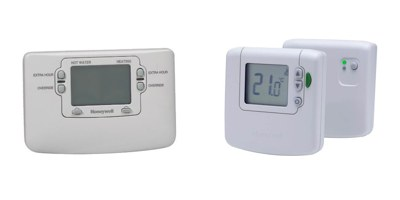 |
View Honeywell ST9420C + DT92E (Sundial RF2 Pack 2) user manualHoneywell ST9420C + DT92E (Sundial RF2 Pack 2) user manual PDF |
View Honeywell ST9420C + DT92E (Sundial RF2 Pack 2) installation manualHoneywell ST9420C + DT92E (Sundial RF2 Pack 2) installation manual PDF |
Honeywell ST9420C + DT92E (Sundial RF2 Pack 2) |
Wireless programmer & room stat |
|
|
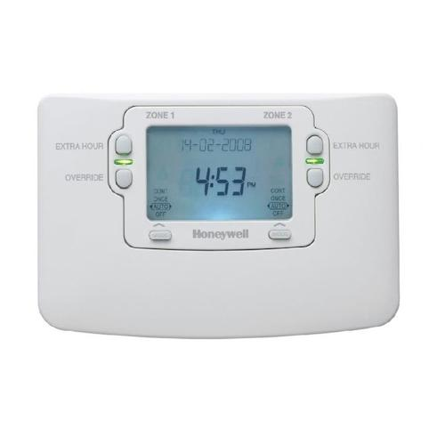 |
View Honeywell ST9500C user manualHoneywell ST9500C user manual PDF |
View Honeywell ST9500C installation manualHoneywell ST9500C installation manual PDF |
Honeywell ST9500C |
2-zone combi programmer |
|
|
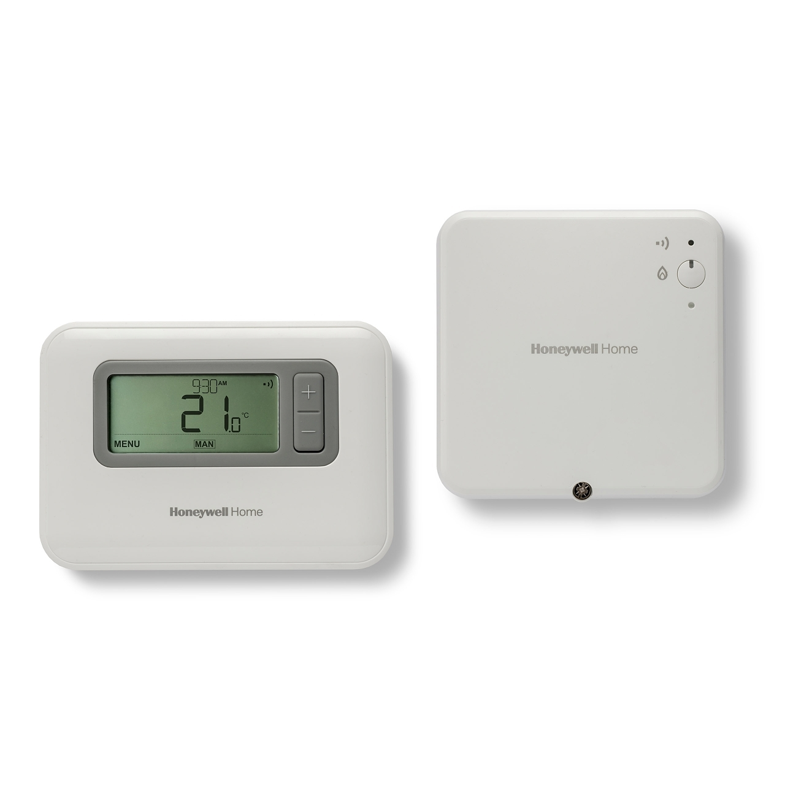 |
View Honeywell T3 / T3M / T3R user manualHoneywell T3 / T3M / T3R user manual PDF |
View Honeywell T3 / T3M / T3R installation manualHoneywell T3 / T3M / T3R installation manual PDF |
Honeywell T3 / T3M / T3R |
Programmable thermostat |
|
|
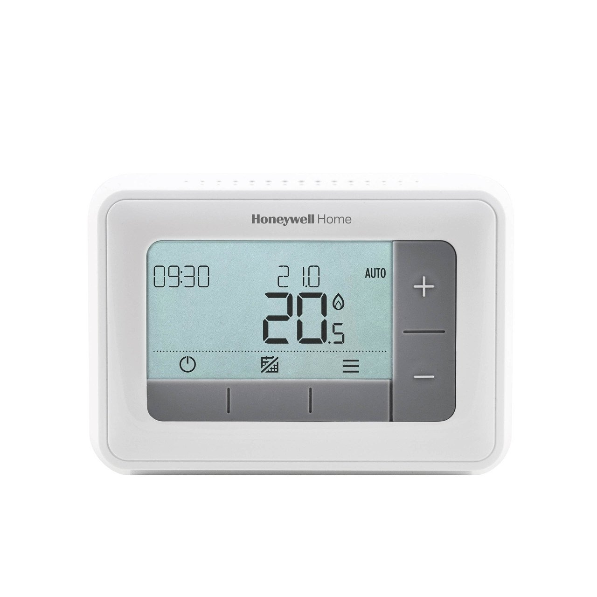 |
View Honeywell T4 user manualHoneywell T4 user manual PDF |
View Honeywell T4 installation manualHoneywell T4 installation manual PDF |
Honeywell T4 |
Wired programmable thermostat |
|
|
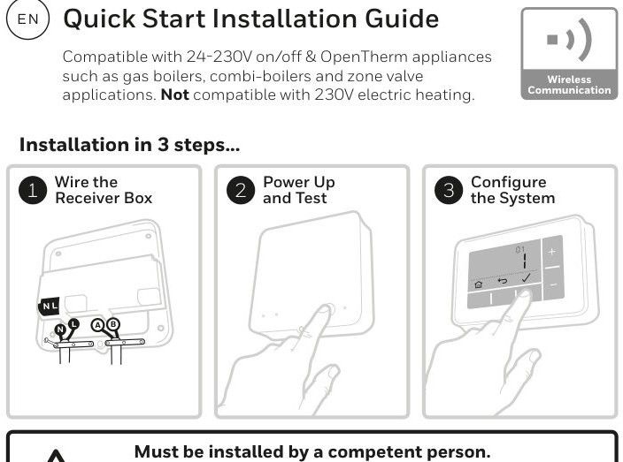 |
View Honeywell T4R user manualHoneywell T4R user manual PDF |
View Honeywell T4R installation manualHoneywell T4R installation manual PDF |
Honeywell T4R |
Wireless programmable thermostat |
|
|
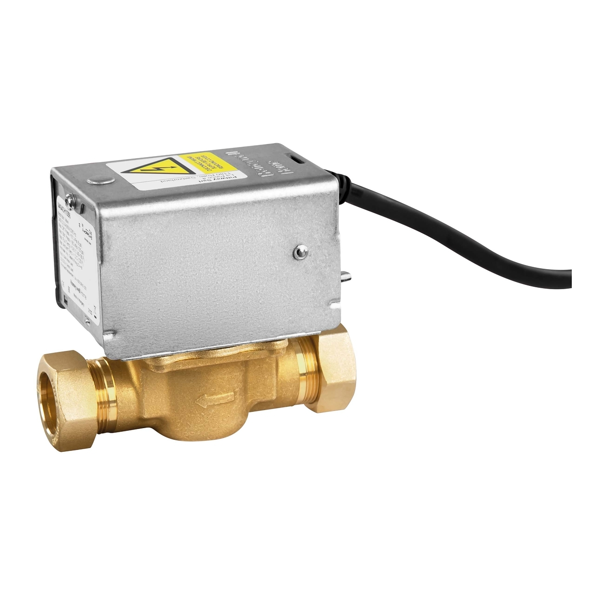 |
View Honeywell V4043H user manualHoneywell V4043H user manual PDF |
View Honeywell V4043H installation manualHoneywell V4043H installation manual PDF |
Honeywell V4043H |
Motorised zone valve |
|
|
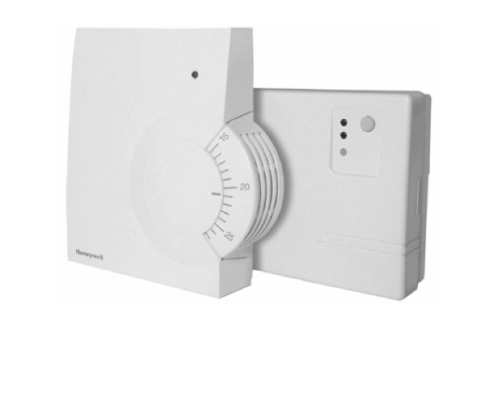 |
View Honeywell Y6630D user manualHoneywell Y6630D user manual PDF |
View Honeywell Y6630D installation manualHoneywell Y6630D installation manual PDF |
Honeywell Y6630D |
View Quick start: Honeywell Y6630D quick start guideHoneywell Y6630D quick start guide PDF |
|
|